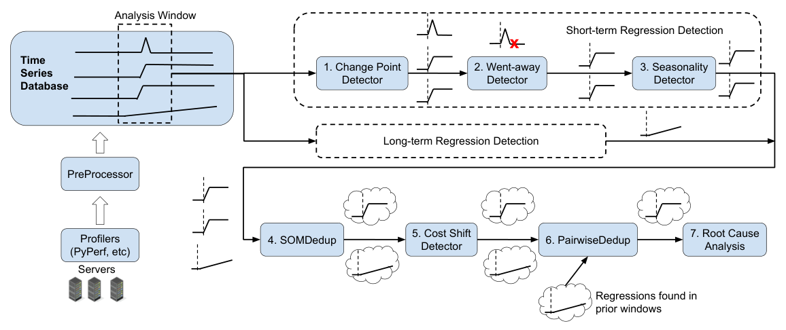
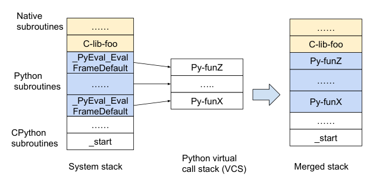
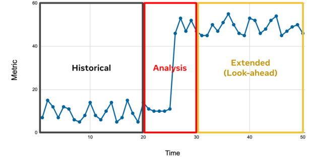
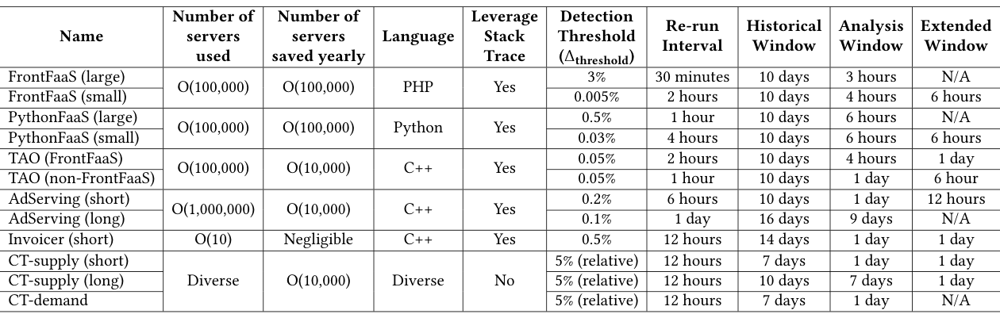
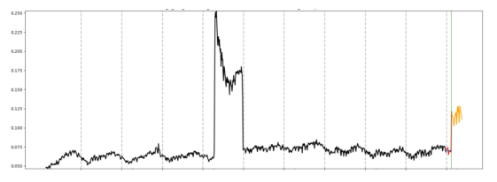
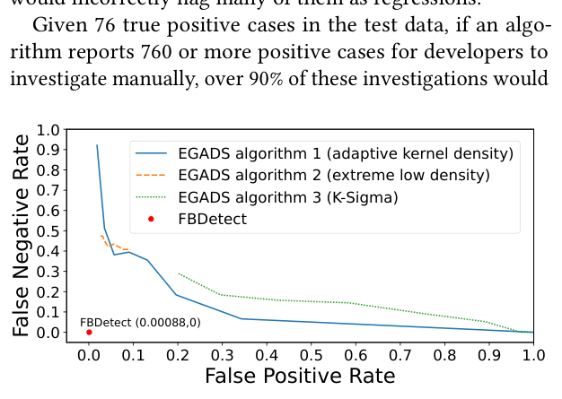

FBDetect: Catching Tiny Performance Regressions at Hyperscale through In-Production Monitoring
This page was written by an AI model to give a high-level overview of the paper. Please check the paper for detail: ACM Digital Library.
At Meta's scale, millions of servers, a performance regression that increases CPU usage by a fraction of a percent can waste thousands of machines if it ships unnoticed. The paper reports that among roughly 800 regressions per year on Meta's serverless platform, about one in ten is only a 0.005% to 0.01% increase in CPU usage, yet collectively these tiny regressions would have wasted around 4,000 servers; the median regression across that platform is also small, at 0.048%. Pre-production testing catches many regressions, but some slip through because test environments cannot fully replicate production, and because detecting a truly tiny effect requires more samples than a small test fleet can gather quickly.
Generic time-series anomaly detection is not enough on its own. Measuring a whole service's CPU usage as one noisy time series buries a 0.005% shift in noise from mixed server generations, diverse request types, and transient events (failures, maintenance, load spikes, canary tests, traffic shifts) that can last seconds to hours. The paper reports that a typical change-point detection algorithm, applied naively, produces a 99.7% false-positive rate in Meta's production environment, and that Yahoo's EGADS anomaly detector cannot simultaneously achieve low false positives and low false negatives on this workload no matter how its sensitivity is tuned.
FBDetect's key idea is to measure performance at the subroutine level instead of the whole-process level, using fleet-wide stack-trace sampling to compute each subroutine's relative CPU usage (gCPU). Because a hyperscale service decomposes into many thousands of subroutines, the variance of a subroutine's gCPU is far lower than the variance of the process's total CPU usage, which lets FBDetect detect a given percentage regression with far fewer samples. This single move is then surrounded by a cascade of filters built specifically for the failure modes that subroutine-level measurement and production noise introduce: a went-away detector for transient blips, a seasonality detector for periodic patterns, a cost-shift detector for regressions that are really just code moving between subroutines, and two deduplication passes that merge the many correlated anomalies one real change can trigger.
Mechanically, periodic stack-trace samples (captured via eBPF, a Python-specific profiler called PyPerf, or language-runtime support) are converted into subroutine-level gCPU time series, which FBDetect scans over historical, analysis, and extended time windows. A short-term pipeline (change-point detection, then filtering, then deduplication, then cost-shift analysis, then more deduplication) and a parallel long-term pipeline (seasonality decomposition, trend-based regression detection, change-point localization) together flag candidate regressions, which are then ranked and clustered before FBDetect attempts to pin a root-cause code or configuration change.
FBDetect currently monitors around 800,000 time series across hundreds of services on millions of servers, catches regressions as small as 0.005%, and has run in production for seven years, each year catching regressions that would otherwise have wasted millions of servers. Across a one-month evaluation, its filtering cascade reduced candidate anomalies by three to four orders of magnitude, and on FrontFaaS specifically it left a developer with, on average, one investigation every four years and one false-positive investigation roughly once every 13 years.

Key takeaways
- The core statistical lever is variance reduction: detecting a regression of a given size requires roughly
Δthreshold ∝ √(σ²/n), so FBDetect attacks both σ² (via subroutine-level gCPU) and n (via fleet-wide sampling). - Subroutine-level gCPU measurement, not raw CPU usage, is the central trick: splitting a process's CPU usage across thousands of subroutines shrinks variance by the number of subroutines, letting FBDetect detect a 0.005% regression that is invisible at the whole-service level.
- A went-away detector removes transient false positives (up to 99.7% of raw change points), and a cost-shift detector removes false positives caused by code refactoring that merely moves cost between subroutines (34% of raw subroutine-level regressions in the paper's measurement).
- Two-stage deduplication (fast SOM-based clustering, then slower pairwise clustering) and a weighted root-cause ranking turn a flood of correlated anomalies into a small number of actionable, attributed tickets.
- Seven years of production use across workloads from 5 to over 500,000 servers, catching regressions down to 0.005% and avoiding the false-positive/false-negative tradeoff that baseline methods like EGADS cannot escape.
From stack-trace samples to a ranked, deduplicated ticket
Why variance is the enemy, how subroutine-level gCPU attacks it, how samples are collected, and the filtering and dedup pipeline built on top. Results are covered in the Evaluation tab.
1 · Why tiny regressions matter and why they are hard to see
Meta's private cloud runs on millions of servers, so even a sub-0.1% CPU regression, multiplied across a fleet, wastes real capacity. The paper's motivating data: about 800 regressions per year on Meta's serverless platform, roughly one-tenth of them in the 0.005% to 0.01% range, together costing around 4,000 servers if undetected, with a platform-wide median regression of 0.048%. Pre-production testing (e.g., Meta's own ServiceLab) helps but cannot fully substitute for production measurement, both because test environments can diverge from production and because detecting a tiny effect needs more samples than a small test fleet can gather in reasonable time.
2 · The statistical lever: reduce variance, not just add samples
The paper frames detectability with a simple two-sample test. If σ² is the sample variance and n the sample count, the smallest reliably detectable difference satisfies Δthreshold ∝ √(σ²/n) (derived from a Student's t-test in the paper's Appendix A.2). Hyperscale naturally increases n, but it also increases σ² (mixed server generations, diverse request types), so scaling n alone would take weeks to years to reach a low threshold. FBDetect instead drives σ² down by 100 to 10,000 times, which is what brings detection time down to hours or a few days.
3 · Subroutine-level gCPU: the main variance-reduction trick
Rather than measuring a whole Linux process's CPU usage, FBDetect measures each subroutine's relative CPU usage, gCPU, defined so that if 100 stack-trace samples are collected and subroutine foo appears in 8 of them, gCPU_foo = 8%. Under a simplified independence assumption, if a process decomposes into k subroutines, Variance(X_subroutine) = Variance(X_process)/k, so detectable regressions shrink by a factor of √k. The paper estimates k ≈ 12,048 for its serverless platform's non-trivial subroutines (gCPU ≥ 0.001%, median gCPU 0.0083%). A separate derivation (Appendix A.3) shows the same benefit holds for the relative metric gCPU, not just absolute subroutine CPU usage, and that for a small subroutine a small percentage change in gCPU corresponds to a comparably small percentage change in the process's absolute CPU usage, which justifies using gCPU as the detection signal.
4 · Collecting fleet-wide stack traces, including from Python
FBDetect periodically samples stack traces across the fleet (via eBPF or a language runtime's built-in support, e.g., Java and PHP virtual machines) to compute gCPU per subroutine. Interpreted languages complicate this: naively sampling a Python process's native stack returns the CPython interpreter's own call stack, not the Python program's. The paper's PyPerf solves this with an eBPF probe that walks CPython's virtual call stack (VCS), a linked list of frames starting from a fixed location in the interpreter, mapping each native _PyEval_EvalFrameDefault call to the corresponding Python subroutine.

PyPerf then merges three pieces into one end-to-end stack: CPython's native call stack, the reconstructed Python call stack, and the native call stack of any C/C++ libraries the Python code invokes. The paper states this is, to its knowledge, the first profiler to produce a precise end-to-end stack across Python and the native libraries it calls; the alternative, Scalene, can only approximate time spent in C/C++ because its Python-level profiling cannot see into native code. FBDetect has needed this capability since 2017; Python 3.12's native perf-based stack support (added October 2023) is noted as adding overhead that sampling cannot mitigate and as potentially interfering with JIT optimizations.
5 · Detection windows and per-workload configuration
FBDetect periodically rescans each time series, splitting it into a historical window (the baseline), an analysis window (where regressions are reported), and an extended window (which checks whether a flagged regression persists or disappears).

Because workloads differ enormously in scale and noise, FBDetect is configured per workload. Large, high-traffic services like FrontFaaS and PythonFaaS can use short windows and catch larger regressions quickly, or longer windows (and a lower threshold) to catch very small ones; a tiny service like Invoicer, running on just 16 servers, instead samples far more frequently per server and uses long 14-day historical windows to still catch regressions as small as 0.5%.

FBDetect also supports both absolute thresholds (e.g., a 0.005% gCPU change) and relative thresholds (e.g., a 5% relative change, used by Capacity Triage for throughput), and extends beyond subroutine gCPU to endpoint-level regressions (aggregating costs across asynchronous, multi-thread request handling via end-to-end tracing) and metadata-annotated regressions (via a SetFrameMetadata() call that tags a stack frame with context, such as a user category).
6 · Short-term regression detection: catch it, then unflag the noise
- Change point detector. Applies CUSUM (Cumulative Sum) and EM (Expectation Maximization) iteratively to find the change point with maximum likelihood of differing means before and after, then validates it with a likelihood-ratio chi-squared test at significance level 0.01.
- Went-away detector. Filters out regressions that are really transient blips that recover on their own, like Figure 1(c) in the paper. This went through three iterations: a first version did an extra CUSUM pass looking for a compensating inverse regression (too sensitive to post-regression dips); a second added a Mann-Kendall trend test plus comparison to a historical baseline window (fragile to which window got chosen as baseline, illustrated by Figure 7); the current version adds logic to recognize when values after one change point are "very different" from values after another change point, using Symbolic Aggregate approXimation (SAX) to discretize the time series into a string and compare segments robustly.
- Seasonality detector. Checks for significant autocorrelation, then applies STL (Seasonal and Trend decomposition using Loess) to separate seasonality from trend and residual, computes a pseudo z-score from the median shift normalized by residual standard deviation, and filters the regression if that z-score is below threshold in both the analysis and extended windows.

FBDetect marks a short-term regression as true if NewPattern OR (SignificantRegression AND LastingTrend AND NOT RegressionGoneAway), where each term is computed from the SAX representation, percentile comparisons against historical data, and a Mann-Kendall/Theil-Sen trend estimate compared against a Median-Absolute-Deviation-based threshold.
7 · Long-term regression detection: trends instead of steps
A parallel pipeline targets gradual regressions that a step-change detector would miss. It first runs STL to separate seasonality, trend, and residual, then tests the trend component alone for a regression by comparing the larger of (historical-window mean, analysis-window-start mean) against the smaller of (analysis-window-end mean, extended-window mean). If a regression is found, it locates the change point either at the start of the trend (if a linear fit has low RMSE) or via normal-loss dynamic-programming search otherwise. Unlike the short-term pipeline, seasonality detection runs first (smoothing helps detect gradual change but would hide sudden ones), and there is no went-away detector, since long-term detection is already insensitive to short-lived blips.
8 · Cost-shift detector: distinguishing real cost growth from code rearrangement
Measuring at the subroutine level invites a specific false positive: refactoring that moves code from subroutine A to subroutine B makes B's gCPU look like it regressed, as in Figure 1(b) in the paper. FBDetect defines a "cost domain" (a group of subroutines where a shift is plausible, e.g., a subroutine's upstream callers, its encapsulating class, subroutines sharing a metadata prefix or endpoint-name prefix, or all subroutines touched by one commit) and checks: the domain must have existed before the regression; the domain's own cost must not dwarf the regression (otherwise its seasonal noise would hide the signal); and if the domain's total cost barely changed while one member's cost jumped, the detector calls it a cost shift, not a regression.
9 · Deduplication: SOMDedup then PairwiseDedup
One real change can trigger many correlated anomalies (e.g., across every caller of a regressed subroutine, or across CPU and throughput metrics together). Pairwise clustering of n regressions costs O(n²), so FBDetect first runs SOMDedup, a Self-Organizing Map (SOM) based pass with O(n) complexity that deduplicates same-metric-type regressions (e.g., multiple gCPU series) within one analysis window, using features including candidate root causes (encoded as a bitmap of recent changes touching the regressed subroutine) and TF-IDF-encoded metric IDs. Within each resulting group, the regression with the highest weighted ImportanceScore (relative and absolute cost change, inverse popularity, and whether a root cause was found) is surfaced as the representative. PairwiseDedup then runs a slower, feature-similarity pairwise comparison (Pearson time-series correlation, text cosine similarity of metric IDs, stack-trace sample overlap) to merge remaining regressions across different metric types and time windows, trading scalability for higher accuracy. The paper chose SOM over KNN or hierarchical clustering because SOM's one hyperparameter, grid size L×L with L=⌈4√n⌉, is robust across workloads, whereas KNN's cluster count and hierarchical clustering's cut-level proved hard to set automatically.
10 · Root cause analysis
For each surviving regression, FBDetect ranks candidate code or configuration changes deployed just before it using three weighted factors: subroutine gCPU attribution (what fraction of the regression's gCPU magnitude is explained by samples touching subroutines the candidate change modified, illustrated with a worked example in the paper's Table 2); text similarity (cosine similarity between a feature vector built from the regression's context and one built from the change's description and diff); and time-series correlation (Pearson correlation between the regression and auxiliary, non-performance metrics such as which algorithm variant is active). Developers see only the ranked candidates FBDetect is confident enough to report. How well this works in practice is covered in the Evaluation tab.
Evaluation
The paper's production measurements: how much the filtering cascade cuts noise, false positive/negative rates, root-cause accuracy, the smallest regressions caught, a head-to-head with Yahoo's EGADS, and PyPerf's overhead.
All results are measured in Meta's production environment rather than a controlled testbed. FBDetect itself runs on Meta's common serverless platform, using capacity equivalent to hundreds of servers to continuously analyze about 800,000 time series across hundreds of services. The main detailed study uses FrontFaaS (Meta's PHP serverless platform, over half a million servers, tens of thousands of developers, thousands of commits per workday) because its incidents and developer confirmations are the most completely tracked; PythonFaaS and AdServing are used for the filtering-cascade breakdown; EGADS is the external baseline for a head-to-head comparison.
| Aspect | As stated in the paper |
|---|---|
| Platform | Meta's production fleet (millions of servers); FBDetect itself runs on Meta's internal serverless platform |
| Workloads studied | FrontFaaS, PythonFaaS, TAO, AdServing, Invoicer, Capacity Triage (CT); service sizes range from 5 to over 500,000 servers (P5=23, P10=64, P50=1,251, P90=40,527 servers) |
| Baseline | Yahoo's EGADS, with three tunable algorithms: adaptive kernel density, extreme low density, K-Sigma |
| Metrics | Filtering reduction ratio per technique, false positive/negative rate, root-cause top-3 accuracy, regression magnitude percentiles, profiler throughput overhead |
The filtering cascade cuts candidate anomalies by three to four orders of magnitude
| Stage | FrontFaaS short-term (remaining fraction) |
|---|---|
| Change points detected | 3.96M (baseline) |
| After went-away detection | 1/365 |
| After seasonality detection | 1/468 |
| After threshold filtering | 1/769 |
| After SameRegressionMerger | 1/861 |
| After SOMDedup | 1/3,536 |
| After cost-shift analysis | 1/6,092 |
| After PairwiseDedup (final) | 1/18,857 |
What it shows. Starting from 3.96 million raw change points detected in FrontFaaS's short-term pipeline over one month, each successive filter divides the remaining count further, ending at 1/18,857 of the original, meaning overall FBDetect reduces the number of anomalies a developer would need to examine by three to four orders of magnitude. The paper reports the went-away detector is the single most effective step, removing 99.7% of detected change points; seasonality detection removes a further 22% of what remains; SOMDedup removes 72%, cost-shift analysis 34%, and PairwiseDedup 49% of their respective inputs. PythonFaaS and AdServing show the same cascading pattern, and long-term regression counts (far smaller to start, e.g., 1.09K for FrontFaaS) are filtered less aggressively since they are already less noisy.
What to take from it. No single filter does the job; the paper attributes the need for this many stages to short-term change points being "more prevalent and noisier" than long-term ones in production, and the ordering (fast filters first, slow pairwise comparison last) is deliberately chosen to minimize computation on the large early volumes.
False negatives are rare and false positives are infrequent enough to preserve developer trust
What it shows. Using FrontFaaS's recorded production incidents in 2023 as ground truth (only four performance-related incidents that year despite thousands of daily commits), FBDetect did not miss any incident it was supposed to catch; two were caught by FBDetect but not acted on in time, one involved a metric never exported to FBDetect, and one was an unrelated capacity-management issue. Across three years of all site incidents, the paper found exactly one caused by an FBDetect false negative, traced to the cost-shift detector mistakenly filtering a real regression, after which the detector's algorithm and threshold were revised. On the false-positive side, over one month FBDetect reported 217 regressions for FrontFaaS; of the 70 explicitly confirmed by developers, 49 were true regressions and 21 were false positives (15 of those 21 being unfiltered cost shifts), implying roughly one false-positive investigation every 13 years per developer given FrontFaaS's scale.
What to take from it. The paper is explicit that ground truth is incomplete: 123 of the 217 reported regressions were only marked "resolved" with no explicit true/false confirmation, and the authors note secondary evidence (matching canary-test data, confirmed root causes) suggesting many of these are likely true regressions, but this remains unverified. Cost shifts are flagged as the main remaining source of false positives and a target for future work.
Root-cause analysis is automated for about a third of regressions, close to the ceiling manual effort reaches
What it shows. Of the 217 FrontFaaS regressions reported over one month, FBDetect suggested root causes for 75, and developers confirmed 71 of those correct (within the top-three ranked candidates), an apparent 35% success rate; manual developer effort on the remaining 142 only root-caused an additional six, raising the ceiling to just 37%. A manual investigation of 61 separate true regressions that FBDetect did not root-cause found: 28 had no single dominant root cause (commonly a multi-change feature launch), 5 were caused by production failures unrelated to code or config, 11 involved changes never exported to FBDetect, 5 had the correct cause considered but ranked outside the top three, and 12 had the correct cause considered but filtered out by relevance-score thresholds.
What to take from it. Only the last two categories (5 and 12 cases) represent true algorithmic failures; the paper uses this breakdown to estimate the true failure rate of root-cause analysis at about 22% (excluding cases with no sensible single cause or missing data), arguing the raw 35% figure understates FBDetect's practical value since most "misses" reflect cases where no clean answer exists.
Detected regressions span from 0.005% to double digits, with no sign that tiny regressions are disproportionately false positives
| Group | Smallest | P10 | P50 | P90 | P99 | Largest |
|---|---|---|---|---|---|---|
| All regressions | 0.005% | 0.010% | 0.043% | 0.232% | 0.948% | 15.094% |
| True regressions | 0.005% | 0.011% | 0.048% | 0.241% | 0.809% | 3.862% |
| False positives | 0.006% | 0.012% | 0.062% | 0.442% | 4.003% | 15.094% |
What it shows. Across all regressions FBDetect reported for FrontFaaS, the smallest confirmed true regression is 0.005% and the largest is 3.862%, while the overall smallest and largest reported values (0.005% and 15.094%) include false positives. The P10 values for all three groups (all, true, false-positive) are nearly identical, around 0.01%, and the distributions of "all" and "true regressions" are close to each other, while false positives diverge mainly in their upper tail (largest false positive 15.094% versus largest true regression 3.862%).
What to take from it. Tiny regressions near the 0.005% floor are not disproportionately false alarms, the P10 columns show the opposite; instead, the paper notes that the largest reported regressions tend to be false positives, reinforcing that cost shifts (not noise at the small end) are the dominant remaining false-positive source.
FBDetect beats Yahoo's EGADS on both false positives and false negatives simultaneously

What it shows. On a test set of 107 time series where FBDetect reported regressions (76 confirmed true positives, 31 false positives after manual analysis) plus about 35,000 time series where it reported none, FBDetect achieves a false positive rate of 31/(35,000+31) ≈ 0.00088 with an assumed zero false negative rate (based on the near-zero false negatives found in Result 2). EGADS's three algorithms (adaptive kernel density, extreme low density, K-Sigma) each expose a tunable sensitivity parameter, and sweeping it traces a false-positive/false-negative tradeoff curve; the paper shows only "EGADS algorithm 1" (adaptive kernel density) can reach a false-positive rate below about 0.02 (the bar needed to keep most investigations from being futile, i.e., below 760 of 35,031 cases), but only at the cost of a 0.84 false-negative rate, meaning it misses 84% of true regressions at that setting.
What to take from it. The paper's conclusion is that generic anomaly-detection algorithms face an unavoidable tradeoff in this noisy, transient-issue-heavy environment, whereas FBDetect's went-away detector lets it sit at a point with both low false positives and (near) zero false negatives, something none of the three EGADS configurations can match.
PyPerf's stack-trace sampling overhead is negligible at production rates and modest even at the worst-case rate
What it shows. Using a CPU-intensive microbenchmark that repeatedly serializes a large data structure, compresses it, and writes it to a file, the paper compares throughput with and without PyPerf. At PythonFaaS's actual production sampling rate (one sample per server every 30 minutes), no noticeable overhead was observed. At the highest rate used anywhere in production (one sample per server per second, reserved for small services like Invoicer that need more samples to compensate for having few servers), PyPerf reduced microbenchmark throughput by about 0.8%.
What to take from it. Even the worst-case, highest-frequency sampling configuration costs under 1% throughput on a CPU-bound benchmark, and the paper notes Python stack-trace overhead is inherently higher than for C/C++ programs, so this 0.8% figure should be read as an upper bound for Python-specific overhead rather than a typical number.
FAQ
Q·What does FBDetect actually do, in one sentence?▾
It continuously monitors around 800,000 production time series at Meta (CPU, latency, throughput, memory, error rate, and more) to automatically detect, filter, deduplicate, and attribute performance regressions caused by code or configuration changes, including regressions as small as 0.005%.
Q·How is this different from pre-production testing like ServiceLab?▾
ServiceLab tests changes before they ship, in an environment it controls (e.g., choosing test servers to reduce variance), and assumes a stationary environment. FBDetect runs after changes ship, in production, where it has no control over variance sources and must handle non-stationary effects like transient failures and traffic shifts, which is why it needs techniques like the went-away detector that ServiceLab does not. The paper describes the two as used in complementary ways at Meta, not as competitors.
Q·Why can't a standard change-point detection algorithm just do this job?▾
Change-point detection (e.g., CUSUM-based methods) can find a point where a time series' statistics shift, but it cannot by itself distinguish a real regression from a transient blip (a brief server failure, maintenance window, or load spike) that recovers on its own. The paper reports a typical change-point algorithm produces a 99.7% false-positive rate in Meta's production environment without FBDetect's additional filtering.
Q·What is gCPU, and why not just use raw CPU usage?▾
gCPU is a subroutine's CPU usage as a fraction of its process's total CPU usage, computed from how often that subroutine appears in stack-trace samples. The paper measures gCPU instead of raw CPU usage because it is easier to compute from samples and, under the paper's derivation, carries the same variance-reduction benefit as absolute subroutine CPU usage while small gCPU changes map approximately one-to-one onto small changes in process-level CPU usage.
Q·Why is subroutine-level measurement less noisy than whole-service measurement?▾
A process's CPU usage is the sum of its many subroutines' usage. Under a simplifying independence assumption, splitting that sum across k subroutines divides the variance by k. Since a large service can have tens of thousands of non-trivial subroutines (the paper estimates k ≈ 12,048 for its serverless platform), the variance reduction is large enough to make a 0.005% service-level regression detectable at the subroutine level.
Q·What's a "cost shift" false positive?▾
If a code refactor moves logic from subroutine A to subroutine B without changing total cost, B's gCPU will spike even though nothing actually got slower. FBDetect's cost-shift detector checks a "cost domain" around the subroutine (e.g., its upstream callers or encapsulating class): if that broader domain's total cost barely changed while the subroutine's cost jumped, it's classified as a shift, not a regression. The paper reports 34% of raw subroutine-level regressions in its measurement were cost shifts.
Q·What's a "went-away" false positive, and why was it hard to filter?▾
It's a regression that appears real at first but then spontaneously disappears, caused by transient events like server failures or traffic shifts. Early filtering approaches that compared against a single chosen historical window were fragile: if that window happened to contain its own spike, the algorithm could wrongly dismiss a real regression at the end of the series as "gone away." The current detector instead discretizes segments with SAX and checks whether they look genuinely similar, which the paper found far more robust.
Q·How does PyPerf get a real Python stack trace using eBPF?▾
Sampling a Python process's native stack normally returns the CPython interpreter's own call stack, not the Python program's. PyPerf's eBPF probe instead walks CPython's virtual call stack (VCS), a linked list the interpreter maintains that records each Python frame's source location, and maps native interpreter calls onto that list to reconstruct the actual Python-level call stack, then merges in any native C/C++ library calls.
Q·How does FBDetect decide which code change caused a regression?▾
It ranks candidate changes deployed just before the regression using three signals: how much of the regression's magnitude is explained by stack-trace samples touching subroutines the change modified; text similarity between the regression's context and the change's description; and time-series correlation between the regression and non-performance signals (like which code path is active). It only surfaces candidates when confident, which the paper argues is often the correct behavior rather than a failure.
Q·Why does FBDetect need two separate deduplication passes?▾
One real change can trigger many correlated anomalies. A full pairwise comparison of all of them costs O(n²), too slow at this scale, so FBDetect first runs SOMDedup, a fast O(n) Self-Organizing-Map clustering pass that handles same-metric-type regressions within one time window, then runs the slower but more accurate PairwiseDedup to merge what remains across different metric types and time windows.
Q·Does using FBDetect require instrumenting application code?▾
For CPU usage specifically, no: stack-trace sampling (via eBPF, PyPerf, or built-in language-runtime support) captures subroutine-level data without code changes. The paper notes that memory and other application-level metrics still require manual instrumentation if subroutine-level detection is desired for them.
Q·What's the smallest regression FBDetect has actually caught, and at what scale?▾
0.005%, confirmed as a true regression on FrontFaaS, a service running on more than half a million servers. The same subroutine-level approach also works for small services: the paper reports catching regressions as small as 0.5% on Invoicer, a service with only 16 servers, by sampling more frequently per server and using longer detection windows.
Q·How often does FBDetect miss a real regression?▾
Rarely, based on the paper's evidence. Against FrontFaaS's 2023 incident record it missed none it was supposed to catch, and across three years of all Meta site incidents the authors found exactly one caused by an FBDetect false negative (a cost-shift detector bug, since fixed). The paper is careful to note this doesn't prove zero misses overall, only that any misses were too small to surface as incidents.